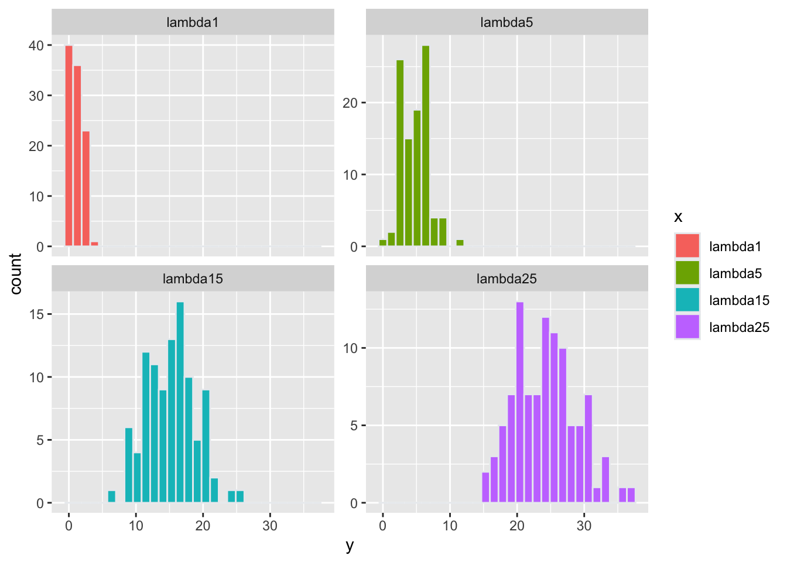
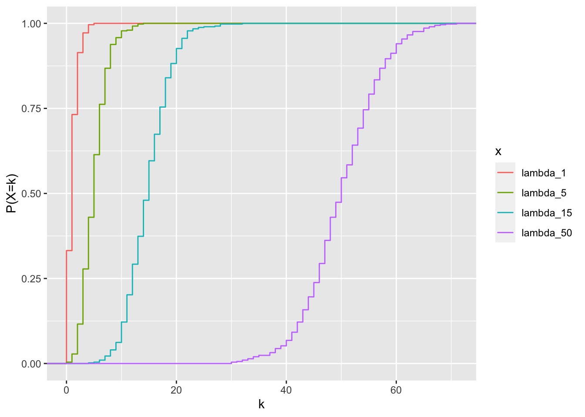
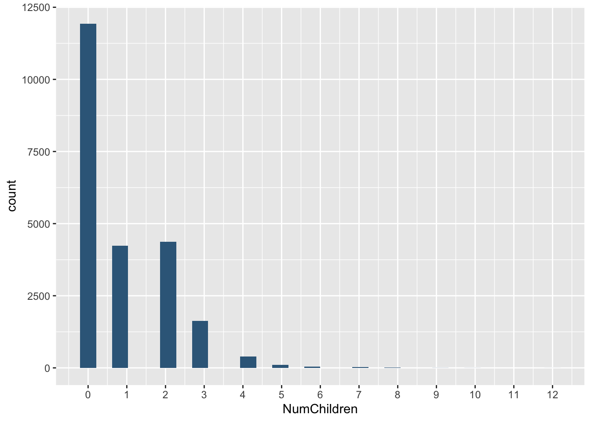
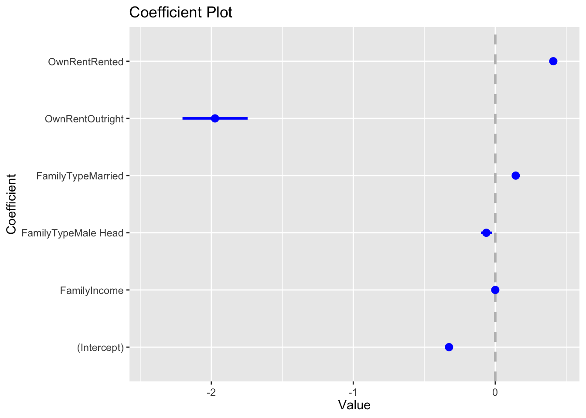

Regresion Poisson


Regresión Poisson
La regresión Poisson es parte de los modelos lineales generalizados (GLM) y se utiliza cuando la variable de respuesta son conteos, unidas discretas positiva.
Los datos provienen del libro y ejemplos de Jared Lander, R for Everyone, 2nd Edition, Addison Wesley Data & Analitics Series, 2017.
acs=read.table("https://jaredlander.com/data/acs_ny.csv", sep=",", header=TRUE, stringsAsFactors = FALSE)
library(readr)
#acs_ny <- read_csv("acs_ny.csv")
#acs=acs_ny
head(acs)## Acres FamilyIncome FamilyType NumBedrooms NumChildren NumPeople NumRooms
## 1 1-10 150 Married 4 1 3 9
## 2 1-10 180 Female Head 3 2 4 6
## 3 1-10 280 Female Head 4 0 2 8
## 4 1-10 330 Female Head 2 1 2 4
## 5 1-10 330 Male Head 3 1 2 5
## 6 1-10 480 Male Head 0 3 4 1
## NumUnits NumVehicles NumWorkers OwnRent YearBuilt HouseCosts
## 1 Single detached 1 0 Mortgage 1950-1959 1800
## 2 Single detached 2 0 Rented Before 1939 850
## 3 Single detached 3 1 Mortgage 2000-2004 2600
## 4 Single detached 1 0 Rented 1950-1959 1800
## 5 Single attached 1 0 Mortgage Before 1939 860
## 6 Single detached 0 0 Rented Before 1939 700
## ElectricBill FoodStamp HeatingFuel Insurance Language
## 1 90 No Gas 2500 English
## 2 90 No Oil 0 English
## 3 260 No Oil 6600 Other European
## 4 140 No Oil 0 English
## 5 150 No Gas 660 Spanish
## 6 140 No Gas 0 EnglishQué es una distribución Poisson
La distribución de Poisson se usa cuando tenemos valores numéricos discretos, 0, 1, 2, 3, 4…k, pero no puede tener valores parciales como 1.4
La formulación de la regresión de Poisson es \({ y }_{ i }~ pois({ \theta }_{ i })\) donde \({ y }_{ i }\) es la i-ésima respuesta y \({ \theta }_{ i }=\quad { e }^{ { X }_{ i }\beta}\) es la media de la distribución para la i-ésima observación.
Para el primer ejercicio nota aquí que los datos es la cantidad de hijos por familia. El primer punto que hay que apreciar es que los valores son unidades, y que estos no puede haber 1.1, medio hijo o -1 hijo. En otra palabra es que los datos están en intervalos y positivo. Entonces la distribución Poisson es una variable x de datos al azar y discreta y tiene una distribución Poisson si los parámetros \(\lambda\) > 0, para k = 0,1,2,….k, y la función de probabilidad es igual a
\[Pr\left(x=k\right)=\frac{\lambda^k\cdot e^{-\lambda}}{k!}\]
donde
- e es igual al valor de Euler, e=2.71828…
- k es el número de ocurrencias.
- k! es el factorial de k.
Cuando se describe una distribución Poisson el promedio es \(\lambda\) y la varianza es tambien \(\lambda\). Es el mismo valor. Para la descripción de los otras medidas de tendencia centrales y de dispersión vea el website de Wikipedia (https://en.wikipedia.org/wiki/Poisson_distribution).
set.seed(23454)
foo <- list(
df1 = data.frame(x=rep('lambda_1', 500), y = rpois(500, 1)),
df5 = data.frame(x=rep('lambda_5', 500), y = rpois(500, 5)),
df15 = data.frame(x=rep('lambda_15', 500), y = rpois(500, 15)),
df25 = data.frame(x=rep('lambda_50', 500), y = rpois(500, 50))
)
#foo
lambda=rbind(foo$df1, foo$df5,foo$df15,foo$df25 )
head(lambda)## x y
## 1 lambda_1 1
## 2 lambda_1 1
## 3 lambda_1 1
## 4 lambda_1 0
## 5 lambda_1 3
## 6 lambda_1 1## x y
## 1 lambda_1 1
## 2 lambda_1 1
## 3 lambda_1 1
## 4 lambda_1 0
## 5 lambda_1 3
## 6 lambda_1 1Distribución de frecuencia de distribución Poisson
Las figuras de la frecuencia demuestra , nota que se tiene 500 valores seleccionado al azar en cada simulación donde el promedio, \(\lambda\) varia, los \(\lambda\) son 1, 5, 15 y 25. Nota que un \(\lambda\) de uno es que tiene un promedio de uno y una varianza de 1. A medida que el promedio se aleja de 0 y que la muestra es grande la distribución se acerca a una distribución normal.
ggplot(lambda, aes(y, fill=x))+
geom_histogram(color="#e9ecef")+
facet_wrap(~x, scales="free_y")+
ylab("Frecuencia")+
xlab("k")
Función de Probabilidad
Se puede convertir estos gráfico en “probability mass distribution”. En esta ocasión la distribución sigue la siguiente ecuación,
\[Pr\left(x=k\right)=\frac{\lambda^k\cdot e^{-\lambda}}{k!}\]
La suma de \(Pr\left(x=k\right)\) es igual a uno.
ggplot(lambda, aes(y, fill=x))+
geom_histogram(aes(y=..density..), color="#e9ecef")+
facet_wrap(~x)+
ylab("P(X=k)")+
xlab("k")
Probabilidades cumulativas
Aqui se aplica la función para visualizar la probabilidades cumulativas, vea stat_ecdf {ggplot2} para más detalles. Lo que se observa es la probabilidad de incluir los valores cumulativamente. Los más importante es reconocer que la adición de las probabilidades no es continua, pero “salta” de un valor a otra a medida que se añade la frecuencia de los valores en el eje de x. Si fuese una distribución normal, la linea seria suavizada. Nota que cuando el valor de \(\lambda\) es más grande los saltos son más pequeños (es más suave el cambio).

Ejemplos de Datos Poisson
Muchas veces los datos que uno recolecta tienen esta características de ser discreto y positivos. En este ejemplo es el número de hijos que tiene familias. Los datos son discretos y positivos.
Ejemplos:
- El número de hijos por mujer.
- El número de errores ortográficos en una frase de 100 palabras
- El número de animales muertos en la carretera por una distancia especifica
- El número de mutaciones en una cadena de ADN
- El número de estudiantes por salón
- El número de frutos por planta
Regresión Poisson
El primer paso es evaluar la variable de dependiente. Miramos las variables del archivo.
## Acres FamilyIncome FamilyType NumBedrooms NumChildren NumPeople NumRooms
## 1 1-10 150 Married 4 1 3 9
## 2 1-10 180 Female Head 3 2 4 6
## 3 1-10 280 Female Head 4 0 2 8
## 4 1-10 330 Female Head 2 1 2 4
## 5 1-10 330 Male Head 3 1 2 5
## 6 1-10 480 Male Head 0 3 4 1
## NumUnits NumVehicles NumWorkers OwnRent YearBuilt HouseCosts
## 1 Single detached 1 0 Mortgage 1950-1959 1800
## 2 Single detached 2 0 Rented Before 1939 850
## 3 Single detached 3 1 Mortgage 2000-2004 2600
## 4 Single detached 1 0 Rented 1950-1959 1800
## 5 Single attached 1 0 Mortgage Before 1939 860
## 6 Single detached 0 0 Rented Before 1939 700
## ElectricBill FoodStamp HeatingFuel Insurance Language
## 1 90 No Gas 2500 English
## 2 90 No Oil 0 English
## 3 260 No Oil 6600 Other European
## 4 140 No Oil 0 English
## 5 150 No Gas 660 Spanish
## 6 140 No Gas 0 EnglishLa variable dependiente en nuestro análisis es número de hijos NumChildren. Se observa que la mayoria de las familias no tienen hijos,
ggplot(acs, aes(x=NumChildren))+
geom_histogram(bindwidth=1, fill="#376889")+
scale_x_continuous(breaks = round(seq(min(acs$NumChildren), max(acs$NumChildren), by = 1),1))## Warning: Ignoring unknown parameters: bindwidth
Modelo Poisson
El modelo de regresión Poisson usa la función glm() y una transformación log con la siguiente función family=poisson(link=“log”).
children1<-glm(NumChildren~FamilyIncome+FamilyType+OwnRent,
data=acs, family=poisson(link="log"))
summary(children1)##
## Call:
## glm(formula = NumChildren ~ FamilyIncome + FamilyType + OwnRent,
## family = poisson(link = "log"), data = acs)
##
## Deviance Residuals:
## Min 1Q Median 3Q Max
## -1.9950 -1.3235 -1.2045 0.9464 6.3781
##
## Coefficients:
## Estimate Std. Error z value Pr(>|z|)
## (Intercept) -3.257e-01 2.103e-02 -15.491 < 2e-16 ***
## FamilyIncome 5.420e-07 6.572e-08 8.247 < 2e-16 ***
## FamilyTypeMale Head -6.298e-02 3.847e-02 -1.637 0.102
## FamilyTypeMarried 1.440e-01 2.147e-02 6.707 1.98e-11 ***
## OwnRentOutright -1.974e+00 2.292e-01 -8.611 < 2e-16 ***
## OwnRentRented 4.086e-01 2.067e-02 19.773 < 2e-16 ***
## ---
## Signif. codes: 0 '***' 0.001 '**' 0.01 '*' 0.05 '.' 0.1 ' ' 1
##
## (Dispersion parameter for poisson family taken to be 1)
##
## Null deviance: 35240 on 22744 degrees of freedom
## Residual deviance: 34643 on 22739 degrees of freedom
## AIC: 61370
##
## Number of Fisher Scoring iterations: 5
¿Qué es la sobre dispersión?
En estadística, la sobredispersión es la presencia de una mayor variabilidad (dispersión estadística) en un conjunto de datos de lo que se esperaría según un modelo estadístico dado. En el modelo Poisson, el promedio es igual a \(\lambda\) y la varianza es igual a \(\lambda\), entonces son iguales. Por consecuencia el supuesto es que la hipótesis nula es que la varianza es igual a
La sobre es definida como
\[OD=\frac { 1 }{ n-p } \sum _{ i=1 }^{ n }{ { z }_{ i }^{ 2 } }\]
donde
\[{ z }_{ i }=\frac { \gamma _{ i }-{ \hat { \gamma } }_{ i } }{ sd({ \hat { \gamma } }_{ i }) } =\frac { \gamma _{ i }-{ \mu }_{ i }{ \hat { \theta } }_{ i } }{ \sqrt { { \mu }_{ i }{ \hat { \theta } }_{ i } } }\]
Se puede evaluar los residuales estandarizados en R con el siguiente script. El modelo se llama children1 y se aplica la formula arriba de la siguiente forma.
## 1 2 3 4 5 6
## 0.18186518 0.87627176 -0.84977889 -0.08314153 0.39096022 1.95966583Probando si hay sobredisperión
Generalmente, una relación de sobredispersión de 2 o más indica sobredispersión. Si bien esta relación de sobredispersión es menor que 2, el valor p es 1, lo que significa que hay una sobredispersión estadísticamente significativa. Así que reajustamos el modelo para tener en cuenta la sobredispersión usando la familia de quasipoisson, que en realidad usa la distribución binomial negativa.
##
## Overdispersion test
##
## data: children1
## z = 27.518, p-value < 2.2e-16
## alternative hypothesis: true alpha is greater than 0
## sample estimates:
## alpha
## 0.4696118Pueden encontrar otras alternativas de como evaluar si hay sobredispersión de los datos en este enlace. https://stats.stackexchange.com/questions/66586/is-there-a-test-to-determine-whether-glm-overdispersion-is-significant
children2<-glm(NumChildren~FamilyIncome+FamilyType+OwnRent,
data=acs, family=quasipoisson(link="log"))
# Me will now compare the dispersion pattern visually for both models.
multiplot(children1, children2)
“Activities reported in this website was supported by the National Institute of General Medical Sciences of the National Institutes of Health under Award Number R25GM121270. The content is solely the responsibility of the authors and does not necessarily represent the official views of the National Institutes of Health.”